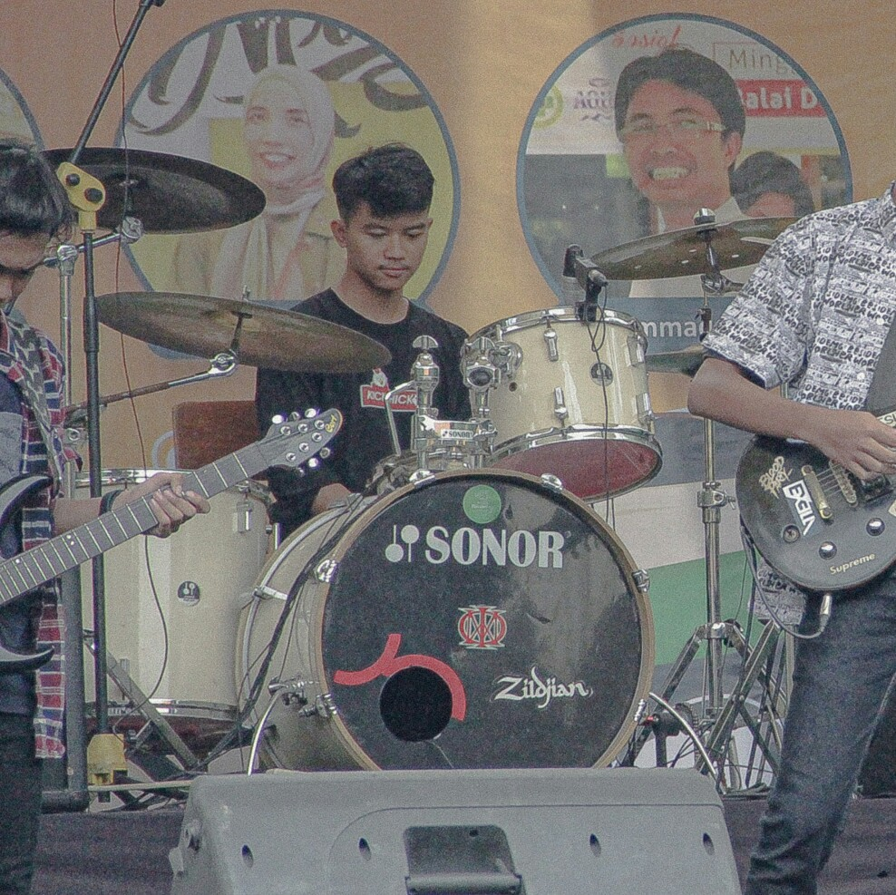

Hobi.
Bermain & Mendengarkan musik.

Saya suka bermain musik dan mandengarkan musik. saya mendengarkan
musik untuk menengangkan diri dan menghibur diri dengan lantunan
nada yang indah
untuk mambantu menenangkan diri dan memfokuskan saya untuk
melakukan sesuatu. Dan saya juga suka bermain alat musiknya yaitu
drum & gitar.
saya suka melakukan hal tersebut untuk menghibur diri dan melatih
bakat saya.
Berolahraga.

Saya suka berolahraga karena hal tersebut sangat penting juga bagi
tubuh saya dan menyehatkan saya agar kuat jasmani dan rohani
selain itu olahraga akan juga memperbaiki penampilan kita atau
fisik kita khusus nya badan. agar lebih terlihat kuat dan berotot
dan juga agar kita terliaht bersih dan menyehatkan dimata orang